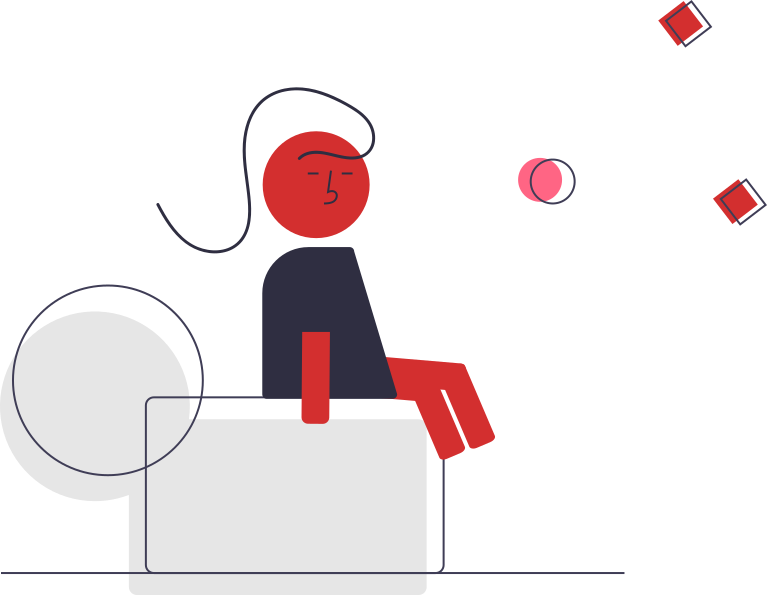
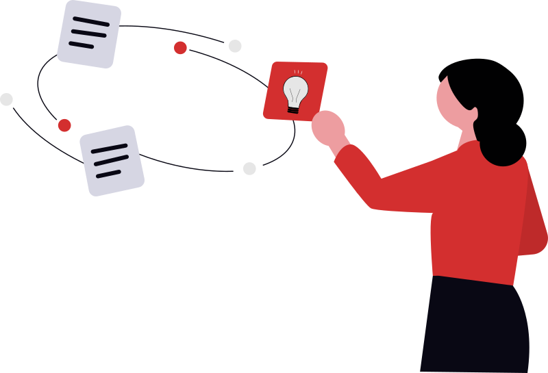
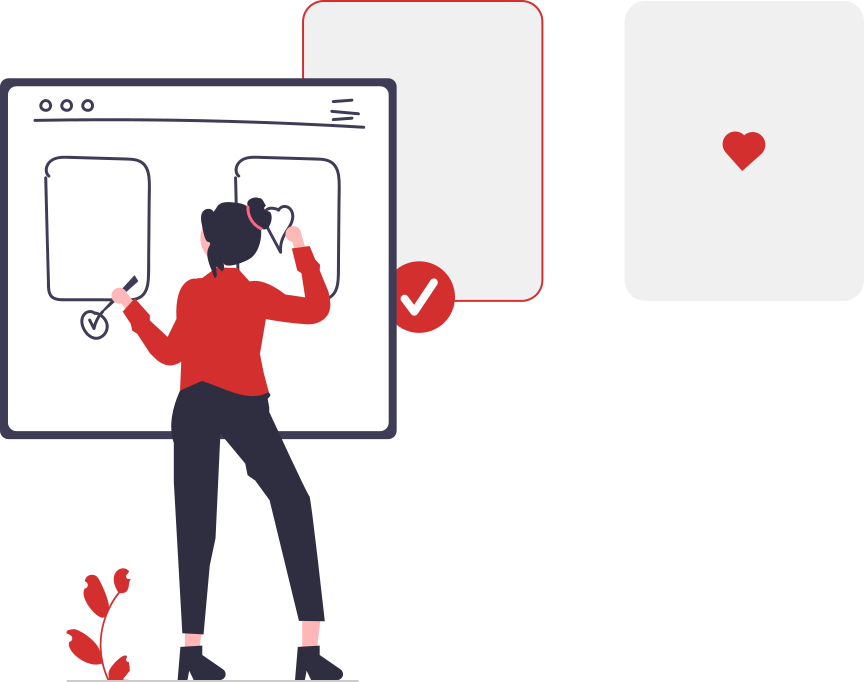

Seamos honestos… ¿Cuántas veces te ha tocado hacer un proyecto en equipo y la primera hora entera se les fue en decidir por dónde iban a empezar? ¿Y los que no responden los mensajes?
Sabemos que todo el mundo tiene una opinión diferente, distintas formas de pensar, nadie se pone de acuerdo, otros proponen algo a lo que los demás dicen "sí pero…" y al final terminan haciendo lo primero que se les ocurrió a las 2 am porque ya no les quedó más tiempo.
Ahora sabes que el problema no era el proyecto. Era que nunca se pusieron de acuerdo para saber cuál era el problema real.
Pero hay una solución para pensar fuera del caos. Y justo para eso existe el Design Thinking.
¿Qué es el Design Thinking?
Imagina que tus audífonos están todos enredados. No puedes simplemente jalar cualquier cable – si lo haces, el nudo se aprieta más. Tienes que detenerte y poner atención por dónde debes empezar para desenredarlos en orden.
Resolver problemas funciona exactamente igual. El Design Thinking es justo el proceso que te dice por dónde jalar primero, sin saltarte pasos, y siempre pensando en las personas a quienes quieres hacer llegar tu solución – ojo, no es lo que a ti te parece lo más rápido o lo más obvio.
No es una materia difícil y tampoco un término de negocios que solo usan los de Harvard. Es un camino que tú puedes seguir, y que empieza por algo que casi nunca hacemos: entender el problema a profundidad antes de intentar resolverlo.
Cada una de sus cinco fases tiene un propósito muy claro, y si las sigues, vas a dejar de dar vueltas en círculos.
¿Vemos cómo funciona con un proyecto en equipo?
Fase 1 — Empatizar
Empecemos por el inicio. Tu equipo y tú ya tienen asignado el proyecto de tal materia muy padre, pero ¿y ahora qué? Antes de proponer cualquier solución, de repartir la tarea y abrir el Drive, párate un momento.
¿Sabes realmente para quién es lo que van a hacer? Exacto. No es lo que tú asumes, no lo que le pareció obvio a tu equipo en la madrugada. Es ir más allá de lo obvio y entender qué es lo que esa persona realmente vive, siente y necesita.
Empatizar es dejar de asumir y salirte de tu cabeza para meterte en la del otro. Pregúntate ¿para quién es esto que estamos haciendo? ¿Qué problema tiene esa persona? ¿Qué siente cuando se enfrenta a él? Y si puedes, habla con ella. Escúchala sin interrumpir y toma notas. Obsérvala si puedes, porque el lenguaje no verbal dice a veces más que las palabras.
¿Sencillo, no crees? Domina el arte de comprender a la otra parte y dejarás de perder el tiempo en lo que viene.
Supongamos que tenemos un proyecto de comunicación y la tarea es crear una campaña para que los estudiantes lleguen más temprano a clases. Antes de proponer nada, el equipo decide hablar con sus propios compañeros. ¿Qué sucedió? Descubrieron que no es flojera – es que muchos viven lejos, el transporte falla y nadie les explicó nunca por qué importa llegar a tiempo. Ahora lo ves, y eso lo cambia todo.

Fase 2 — Definir
Ya escuchaste, observaste y tomaste tus notas. Ahora tienes un montón de información en la cabeza y en tu libreta. ¿Y ahora qué haces con todo eso? Aquí te va otra analogía para entenderlo mejor: ya tienes tu canvas en blanco y un montón de colores, ahora toca definir cuáles vas a usar para pintar y qué pintarás.
Definir se trata de tomar todo lo que aprendiste en la fase anterior y convertirlo en un problema claro, concreto y accionable. Nada de "el problema es que todo está mal" — sal de ahí, eso no te lleva a ningún lado. Lo que necesitas es una frase precisa que diga exactamente qué necesita resolverse y para quién.
Porque si tienes un problema bien definido, ya tienes la mitad de la solución en proceso.
Siguiendo con nuestro proyecto: ya saben que el problema no es la flojera. Entonces el equipo lo define así: "Los estudiantes que viven lejos no llegan a tiempo porque el transporte público es impredecible y nadie les ha dado razones concretas para priorizar la puntualidad." Esto ya es un problema definido. Ahora sí tienen por dónde empezar a trabajar.
Fase 3 — Idear
Llegamos a la parte donde se pone bueno. Ya elegiste tus colores ¿qué vas a pintar?
Ahora que ya sabes para quién estás trabajando y tienes el problema bien definido, ¿qué soluciones se te vienen a la mente?
Idear es ese momento de soltar el juicio y dejar que las ideas fluyan. Todas. Las obvias, las raras, las que parecen imposibles y hasta las que te dan pena decir en voz alta. Recuerda que no existen malas ideas — existe la idea sin desarrollar.
La regla de oro en esta fase: cantidad antes que calidad. Entre más ideas generen, más material tienen para encontrar la que realmente vale la pena desarrollar.
Siguiendo con el proyecto: el equipo ya sabe que el problema es el transporte impredecible y la falta de motivación para llegar a tiempo. Entonces se sientan y proponen de todo — desde una app que rastrea el camión en tiempo real, hasta un sistema de puntos por puntualidad, un podcast para el camino, hasta clases que empiecen 15 minutos después. ¿Todas van a funcionar? No. ¿Todas importan en este momento? Sí.

Fase 4 — Prototipar

Ya tienes un montón de ideas sobre la mesa. Ahora te toca elegir la más prometedora y empezar a darle forma. No tiene que ser la más perfecta, elige la que te haga sentir más confianza.
Recuerda, tu idea debe alinearse a todo lo que trabajaste en las tres fases anteriores.
Prototipar se trata de construir una versión simple y rápida de tu solución para ver si funciona antes de invertirle tiempo, dinero o esfuerzo de verdad. No tiene que parecer una obra de arte y tampoco tiene que estar terminado. Necesita ser suficiente para probarlo.
Piénsalo así: ya elegiste qué es lo que vas a pintar y trazaste tu boceto. Todavía no es la obra final, pero ya puedes ver si tu idea tiene sentido.
Siguiendo con el proyecto: de todas las ideas que propuso el equipo, eligieron crear un podcast corto para el camino a la universidad – episodios de 5 minutos con historias de estudiantes que cambiaron su rutina y les funcionó. El prototipo no es la producción completa, es un episodio grabado desde el celular, con guión básico y editado en cualquier app gratuita. Hicieron lo suficiente para comprobar primero si engancha.
Fase 5 — Testear
¡Despierta! Ya llegamos a la última fase.
Tienes tu prototipo listo ¿qué te falta? Ahora viene la parte en la que muchos huyen: mostrárselo a alguien más.
Testear es poner tu solución frente a las personas reales para las que la diseñaste y observar qué sucede. Olvídate de que te digan que quedó bonito, esto se trata de ver si realmente resuelve el problema que definiste en la Fase 2.
Y aquí va algo importante: si algo no funciona, no es un fracaso. Es información valiosa. El Design Thinking no espera a que lo hagas perfecto a la primera, lo que ganas es aprender más rápido, mejor y ajustar sobre la marcha. No hay artista sin mostrar su obra.
Cerramos con nuestro proyecto de comunicación: el equipo comparte el episodio piloto del podcast con un grupo de compañeros que viven lejos de la universidad. Los escuchan, observan sus reacciones y les preguntan qué sintieron. Algunos dicen que los motivó, otros opinan que los episodios deberían ser más cortos. ¿El prototipo era perfecto? No. ¿Saben ahora exactamente qué tienen que mejorar? Sí. Este es exactamente el punto de todo esto.
Y así, lo que empezó como un proyecto sin rumbo, un equipo desorganizado y una hora entera perdida decidiendo por dónde empezar, terminó en una solución real, probada y mejorada con base en personas reales.
El Design Thinking no es magia, pero tampoco es algo imposible. Es un camino que tú puedes seguir siempre que estés dispuesto a entender primero y proponer después.
La próxima vez que tengas un problema y no sepas por dónde empezar, ya sabes qué hacer. Aplica sus cinco pasos. ¡Ponte tus audífonos y empieza a crear soluciones!
Video complementario
¿Quieres verlo todo en acción? Este video te explica las cinco fases del Design Thinking de forma clara y con ejemplos reales. Un must para lo que acabas de leer.
Podcast complementario
¿Prefieres escucharlo? Este episodio de Platzi te guía paso a paso por las fases del Design Thinking para que puedas aplicarlo desde hoy.
Referencias
- Asana. (2026). Metodología Design Thinking: de la teoría a la práctica. Asana Resources. https://asana.com/es/resources/design-thinking-process
- Henao, W. (1 de enero de 2026). El impacto del storytelling en el diseño web. Serinfor Marketing. https://serinformarketing.com/el-impacto-del-storytelling-en-el-diseno-web/
- ITDO. (11 de septiembre de 2023). Diseño web centrado en el usuario: principales consideraciones y nuevas perspectivas. Blog ITDO. https://www.itdo.com/blog/diseno-web-centrado-en-el-usuario-principales-consideraciones-y-nuevas-perspectivas/
- Platzi. (s.f.). Design Thinking: De la investigación a la solución. [Podcast]. Spotify. https://open.spotify.com/episode/6jJ5mStbuCK505tK0RSC4J
- Ramos, I. (2019, 5 de noviembre). Qué es el DESIGN THINKING- FASES Y EJEMPLOS [Video]. YouTube. https://youtu.be/CTKvYD4PGIA